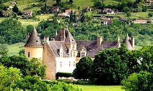
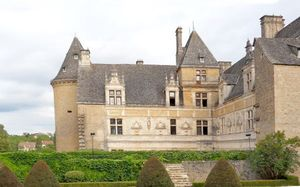
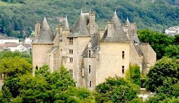
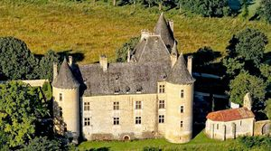
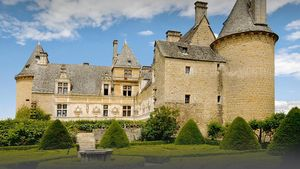
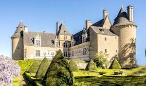
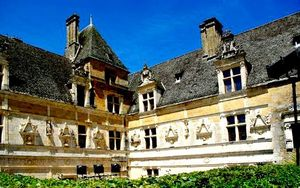
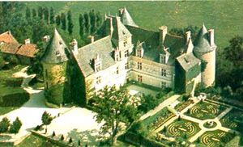

Recensement Jean-Claude Truffet
| Département | 46 — Lot |
| Canton | Saint-Céré |
| Commune | Saint-Jean-Lespinasse |
| Type d'édifice | Château |
| Période d'origine | XVI |








MONTAL, au début du XVIe siècle, la seigneurie de Saint-Pierre, est acquise par les seigneurs de Balsac dEntraygues. Jeanne de Balsac, épouse du seigneur de La Roquebrou, Amaury de Montal, y entreprend dimportants travaux à partir de 1519. construit entre 1519 et 1534 par Jeanne de Balsac d'Entraygues, dame de Montal. Jamais achevé, ce chef-d'uvre de la Renaissance se distingue par la richesse de ses sculptures. Au repaire médiéval, succède un château de plaisance, pourvu dune décoration sculptée exceptionnelle. Les deuils successifs qui affectent Jeanne de Balsac, veuve depuis 1510, mettent un terme à ses projets et, dès 1534, les travaux sont suspendus. Le nouveau château, portant désormais le nom de la dame de Montal, ne sera jamais terminé : deux ailes seulement sur les quatre prévues sont achevées. Les deux fils de Jeanne et dAmaury de Montal disparus avant leur mère, morte en 1559, cest le fils du cadet Dordet, Gilles, qui reçoit la charge de la seigneurie. Celle-ci passe par alliance avec François de Pérusse dEscars, puis à diverses branches collatérales au cours des XVIIe et XVIIIe siècles. En 1771, la seigneurie est vendue au comte de Plas de Tanes.Proposé comme bien national en 1793, le château, abandonné et en fort mauvais état, ne trouve pas dacquéreur. Il est restitué au comte à son retour démigration. Utilisé comme auberge, il est acheté par un banquier de Saint-Céré, puis par un marchand de biens, Macaire du Verdier, en 1879 Maurice Fenaille, réussit enfin à acquérir le château en 1908. En 1913, en fait don à lEtat, restauré et meublé, avec une réserve dusufruit pour lui et ses enfants.
Le site de Montal sur lequel Jeanne de Balsac fit édifier un nouveau château à partir de 1519 était éloigné de quelques centaines de mètres du bourg de Saint-Jean-Lespinasse, où se trouvait un autre château, dit de Saint-Jean, la conception architecturale correspond à ce nouvel art de vivre que découvrait la noblesse française au début du XVIe siècle. Même si les façades nord et ouest évoquent encore les châteaux forts, par la présence de trois tours dangles massives avec corbeaux sculptés, dune échauguette desservant la tour descalier, de quelques meurtrières et de douves, cette austérité ne met que mieux en valeur les logis ouvrant sur la cour intérieure, orientés au sud-est et sud-ouest, face au massif des Césarines. les deux corps de logis placés en équerre sont desservis par un escalier monumental placé dans un pavillon rectangulaire dominant les bâtiments. Deux galeries à portiques devaient initialement fermer la cour intérieure, à lest et au sud-est, comme lattestent la présence dune porte sculptée au premier étage de laile nord-est et des pierres dangle en saillie à lextrémité gauche de la façade sud-est. La distribution des pièces, identiques sur les trois niveaux, répond à un souci de confort et dintimité nouveau, tout en privilégiant la fonction de prestige et dapparat grâce à lescalier somptueusement décoré et largement éclairé. Au rez-de-chaussée et au premier étage, chacun des trois appartements est organisé autour dune grande chambre avec garde-robe et cabinet de retrait placés dans la tour. Deux vastes salles occupent une partie de laile nord-ouest. Celle du premier étage était selon toute vraisemblance la pièce de réception.
Famille de Balsac dEntraygues
"
Château de Montal